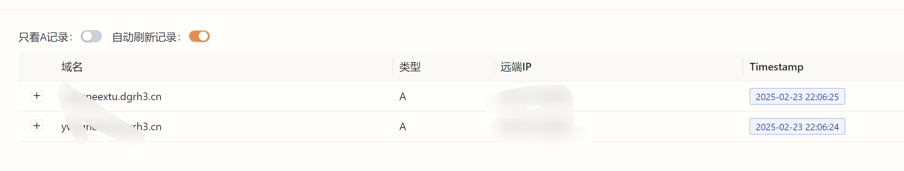
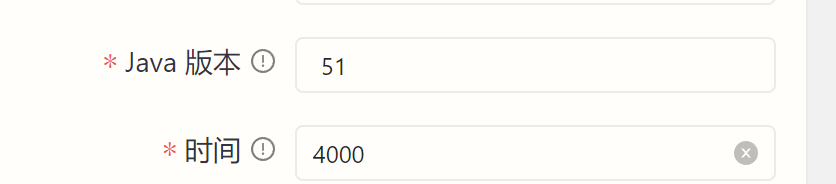
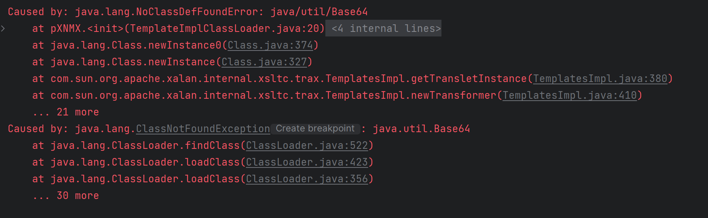

疑虑
今天调试某证券系统的0day，URLDNS有回显，但是CC3却没效果
我确定目标是一定有这个依赖的，于是在Yakit里多换了几个链，发现CC1、CC6可以
稍微一想就明白是类加载的问题，难道是目标使用了定制JDK，TemplatesImpl被删了？
使用FindClassByDNS链，发现TemplatesImpl是存在的，那很奇怪了。。。
本地尝试是可以的，所以还是往目标环境、JDK上猜测原因
一时半会儿猜不出，索性换CB链试试，代码很神奇，有两个CB的版本，其中一个是1.6，看见这个数字我突然灵光一闪————难道目标不是Java 8？
验证
Java 7 和 Java 8有很多类不同，随便找一个8以后才有的类java.time.LocalDate，使用FindClassByDNS链进行测试，没有收到回显
再换Java 7之后才有的java.util.concurrent.ForkJoinPool进行测试

成功回显！这意味着目标是Java 7的环境
解决了…吗？
Yakit的yso模块有一个功能是设置TemplatesImpl里存放的字节码版本，这个选项理应能顺利解决兼容性问题

我修改成了Java 7的版本，重新进行攻击，然而远程目标并没有延迟响应，难道是这个选项没有效果？如何验证猜测呢？
想了想，我选择下载历史悠久Java 7，进行本地测试，查看更详细的报错信息

报错显示java.util.Base64不存在，我有点懵，定制JDK已经魔怔到了这个地步？——————不对，这是我本地的Java 7
原来java.util.Base64 这个好用的API是Java 8才引入的，其在 Java 7 中不可用！
Yakit生成的payload究竟在什么地方用上了Base64，这并不是Echo或者内存马呀
解码后仔细分析，这个payload里的TemplatesImpl装的并不是攻击代码（指静态代码块里写了一堆攻击逻辑的那种）
而是一个名叫TemplateImplClassLoader的类，它实现了什么逻辑呢？很简单，再加载一次类字节码，内容是Base64硬编码的真正攻击代码
（也就是类似小马拉大马的操作）
而这个地方的Base64使用的就是java.util.Base64，所以引发了Java 7环境下的ClassNotFoundException
结案！
总结
- Yakit的yso模块给了Java版本的选项，但实际又不能完成对Java低版本的攻击，我猜上线前没做测试🤔
- 实战中遇到Java 7的情况一定要注意
java.util.Base64这个坑！尤其是各位老红队手上的祖传内存马，我估计都是用的这个API吧